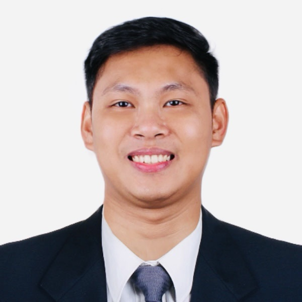

Larry James T. Bunagan
Electronics Engineer

Contact Details
Curriculum Vitae
Personnal Information
Name: Larry James T. Bunagan
Gender: Male
Nationality: Filipino
Date of Birth: January 31, 1994
Marital Status: Married
Language known:
Job Objective
To seek a position that will utilize my skills and knowledge pertaining to the degree and experiences I finished and experienced as NOC Engineer / BSC/RNC engineer (ECE), my practical experience, strong interpersonal skill as well as my eagerness to a quality company. Also, to learn more and enhance my knowledge in the telecommunication industry.
Education
- 2010 – 2015:
Cagayan State University Carig Campus
Carig Sur, Tuguegarao City, Cagayan
Bachelor of Science in Electronics Engineering
- 2006 – 2010:
Magalalag National High School
Magalalag West, Enrile, Cagayan
3rd Honorable Mention
- 2001 – 2006:
Lanna Elementary School
Lanna, Enrile, Cagayan
Skills and Qualifications
- Experience in handling and supporting teams in technical perspective
- GSM (1800/900) script creation
- UMTS (3G bands) integration and script making
- LTE (FDD/TDD) integration and script making
- Knowledgeable in Huawei wireless products
- Alarms troubleshooting and clearance for 2G/3G/LTE related alarms
- Knowledgeable on controllers (BSC/RNC) commissioning and troubleshooting
- Experience in the communication and coordination with customer pertaining to alignment of plans
- Fast learner and independent with strong leadership and critical thinking skills.
- Good communication skills
Relevant Experiences
- TSSR engineer in Huawei Technologies: from Dec 2015 to March 2016.
- Smart project: Refarming
- NOC engineer in Huawei Technologies: from March 2016 to present
- Smart Refarming projects
- Smart BAU projects
- Smart NCR PAWS project
- BSC/RNC TL in Huawei Technologies: from March 2020 to February 2022
- Smart LTE Rollout projects
- Regional Technical Leader for Mindanao region in Huawei Technologies: from March 2022 to present
- Smart LTE Rollout projects
- Smart FTK project
- Smart ATP project
- On – the – job training; Smart Communications Inc., Tuguegarao City Chapter Ugac Sur, Tuguegarao City, Cagayan
Academic Credentials and Extra-curricular Activities